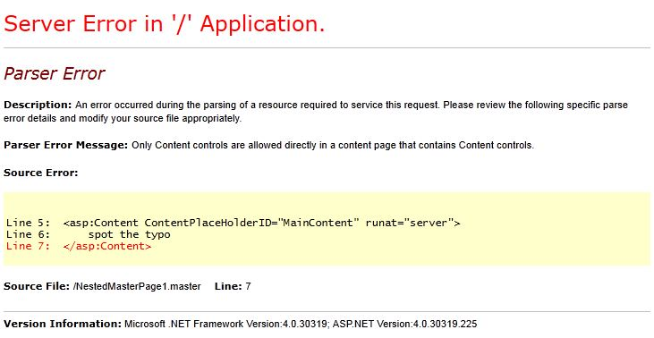
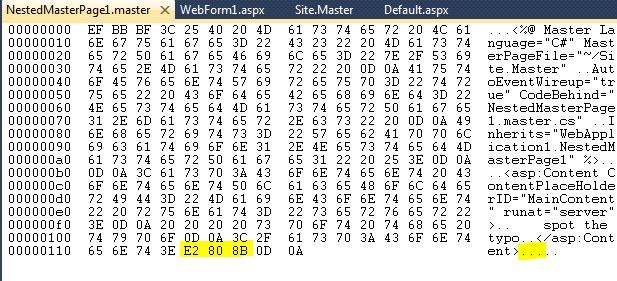

Zero Width Space
Although it sounds like a plot device from StarGate it’s actually a means of indicating a word boundary in computerised typesetting.
It's also a neat way of causing me to tear my hair out and swear a lot. I mean a lot.
I recently was building some nested master pages in ASP.NET. Somehow I had managed to get one of these magical little characters into my source. I’m not sure how as all I had was the most simple of pages.
It looked like this:
<%@ Master Language="C#" MasterPageFile="~/Site.Master"
AutoEventWireup="true" CodeBehind="NestedMasterPage1.master.cs"
Inherits="WebApplication1.NestedMasterPage1" %>
<asp:Content ContentPlaceHolderID="MainContent" runat="server">
spot the typo
</asp:Content>
You can immediately see the problem, right?
Run the app and get a beautiful YSOD:

15 minutes later and I am near to tears. But then… Open the file in a binary editor.

OD OA are the usual /r/n characters. The E2 80 8B at the end is the culprit. Delete these and all is well.
Where did they come from? I don't know. Where did they go? To silicon heaven.
What's worse is I have seen this bug, or one very like it, many years ago. The guy sitting next to me had similar issues (he swore a lot), and eventually he wrote a small app to inspect the hex values of the source (it was back in Visual InterDev days, not sure if there was a binary editor built in back then, but anyways).